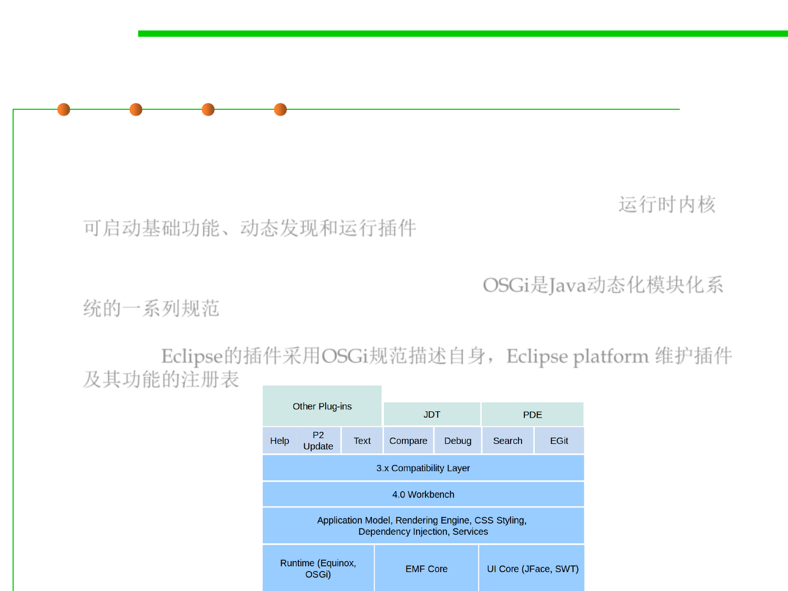

2.2 Process, Systems, and Tools of Software Construction
Core components of Eclipse IDE
▪ Runtime core
– The platform runtime core implements the runtime engine that starts the
platform base and dynamically discovers and runs plug-ins. (运行时内核
可启动基础功能、动态发现和运行插件)
– A plug-in is a structured component that describes itself to the system
using an OSGi manifest (MANIFEST.MF) file(OSGi是Java动态化模块化系
统的一系列规范) and a plug-in manifest (plugin.xml) file. The platform
maintains a registry of installed plug-ins and the functionality they
provide. Eclipse的插件采用OSGi规范描述自身，Eclipse platform 维护插件
及其功能的注册表